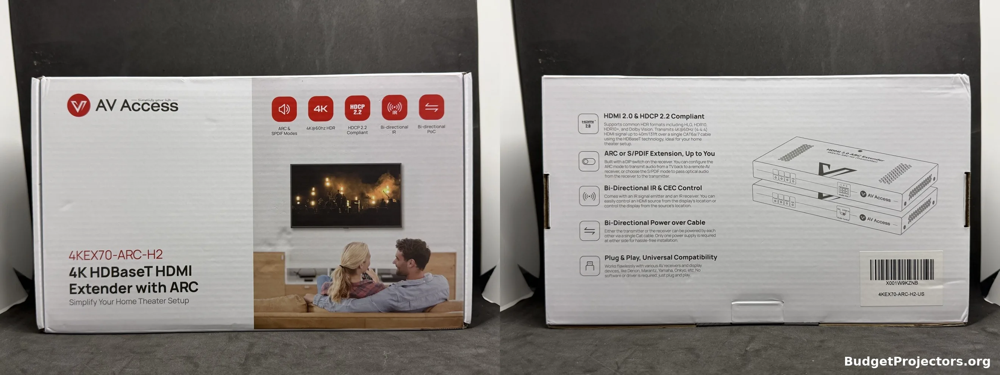
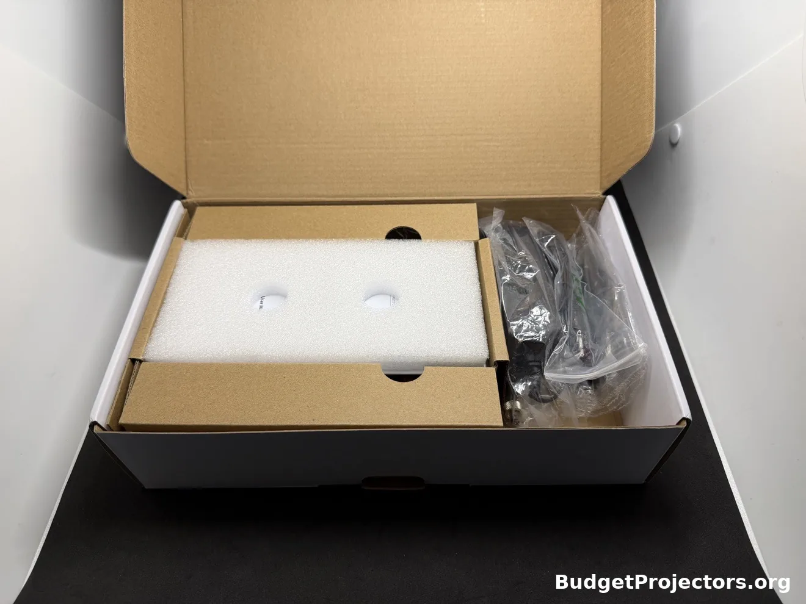
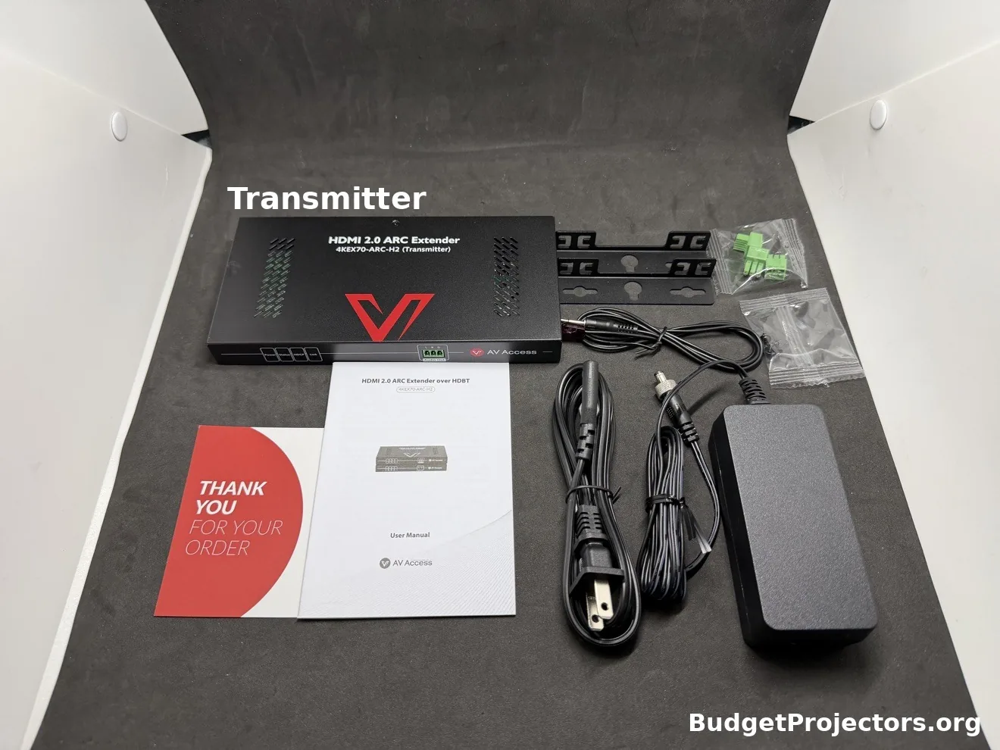
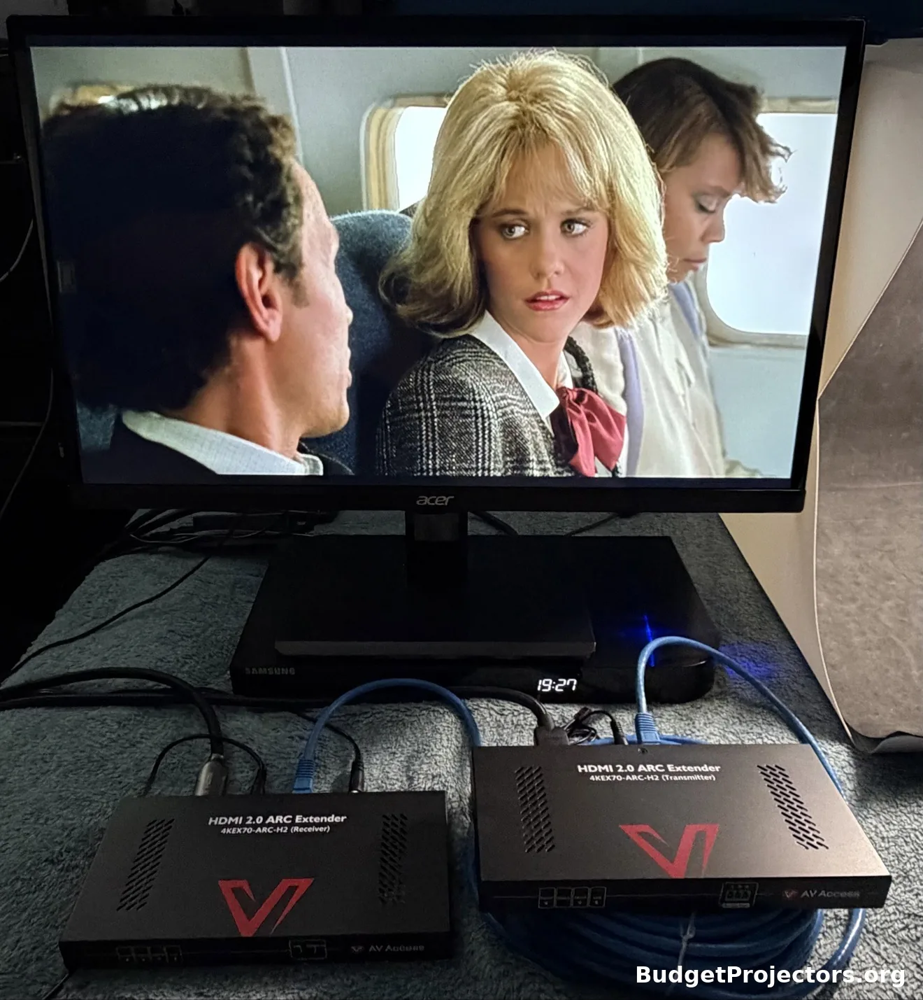
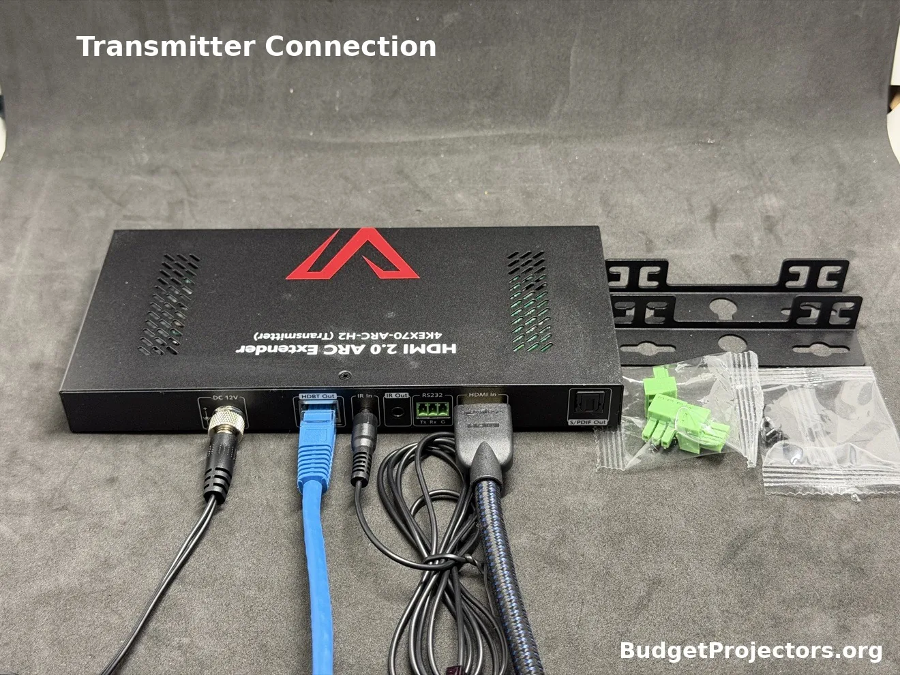
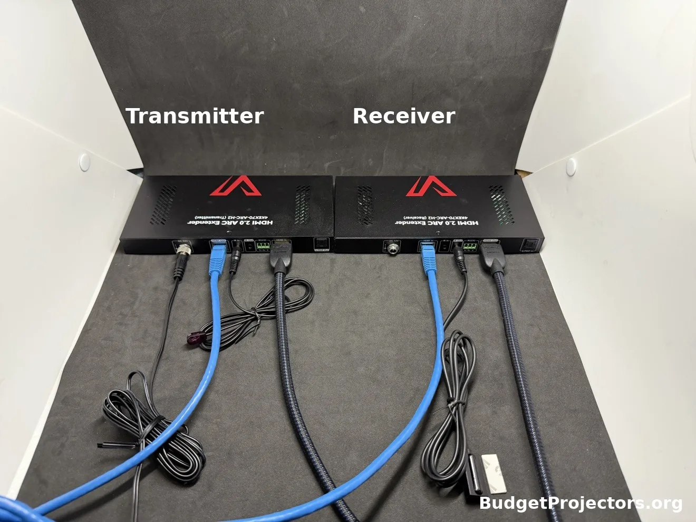
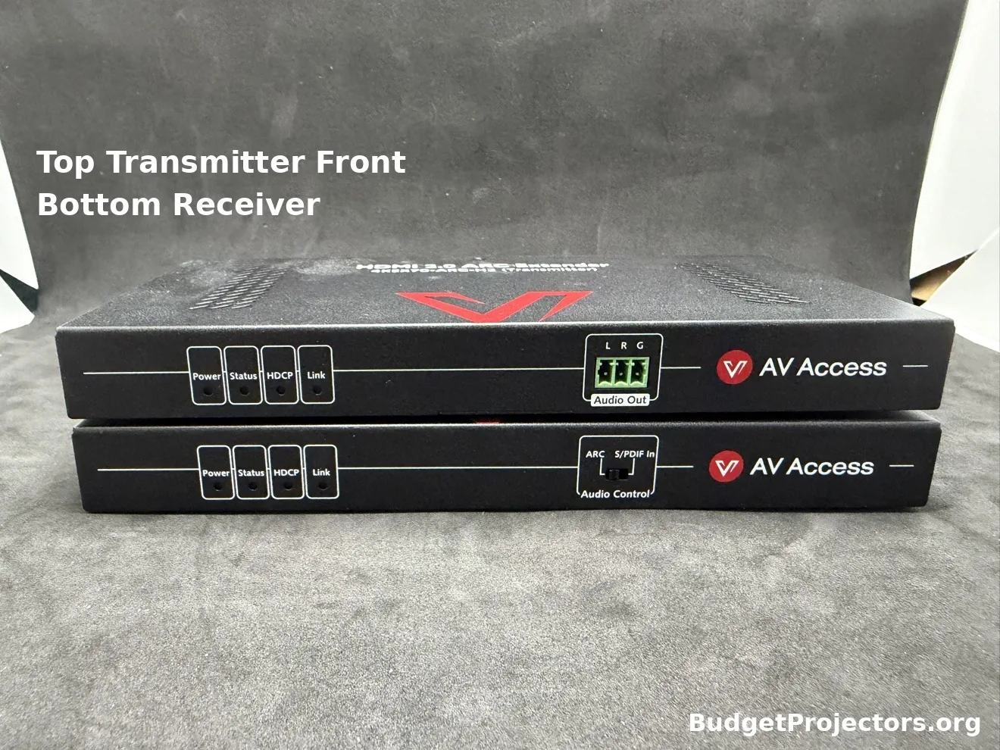
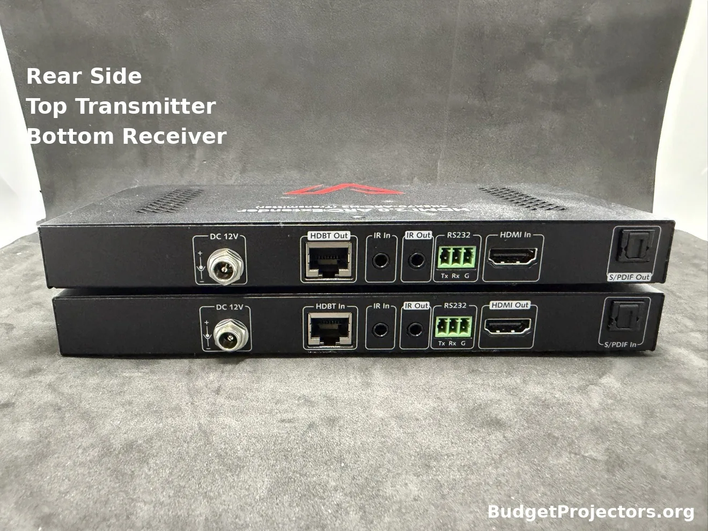

HDMI Extender Review
AV Access HDMI 2.0 ARC Extender over HDBaseT 4KEX70-ARC-H2 Review
Disclosure: I earn an affiliate commission on qualifying purchases made through the AV Access links in this review, at no additional cost to you.
Hey everybody. I wanted to get this one written up because I get asked about this kind of setup a lot, where the projector is way over on one side of the room and all the equipment is somewhere else entirely. I ran this extender in my own setups, inside and outside, so I figured I'd share how it went and what you'd need if you wanted to do the same thing.
So the AV Access 4KEX70-ARC-H2 is one of those HDMI extender kits that runs everything over a single Cat cable instead of a long HDMI cable. Video goes one way, and it can bring audio back from the display the other way too. That's the whole thing that sets this model apart.
Where to buy
Key specs
- Video: HDMI 2.0, 18Gbps, up to 4K at 60Hz 4:4:4, HDCP 2.2, HDR10 pass through (box also lists HDR10+, Dolby Vision and HLG)
- Distance: Cat 5e/6 up to 115 feet at 4K and 197 feet at 1080p; Cat 6a/7 up to 131 feet at 4K and 230 feet at 1080p; T568B, direct transmitter-to-receiver run only
- Audio return: ARC (PCM and Dolby Digital class audio, not eARC), S/PDIF In optical pass through, and analog stereo de-embedding (PCM only)
- Audio over HDMI: PCM up to 7.1, Dolby TrueHD and Atmos, DTS-HD Master Audio, DTS:X
- Control: bi-directional IR, CEC pass through, RS232 via Phoenix connectors
- Power: one 12V 3A adapter, power carried over the Cat cable to the other unit
- Build: metal units about 7.68 by 0.83 by 3.73 inches, under a pound each; surge and ESD protection; 1 year warranty
What it does
It's for a pretty common setup. Projector on one side of the room, all your equipment on the other. Or the equipment isn't even in the room, it's in a closet somewhere. Nobody wants an HDMI cable running across the floor, and once an HDMI run gets long it gets pricey, plus you can start getting dropouts and that kind of thing. One Cat cable through the wall is just cleaner.
What's in the box is the transmitter and the receiver, and they're a matched pair, they only work with each other. Transmitter goes with your sources, receiver goes at the projector or TV. You get one power adapter, 12V 3A, and that's all you need because power goes over the Cat cable to the other end. There's IR cables in there for passing remote signals through, mounting brackets if you want to hide the units somewhere, and the manual.


It also comes with Phoenix connectors, 3 of them, for the RS232 and the analog audio output. I'll be honest, you may never touch those. I didn't use them in my previous standard setup and most people probably won't either. They're just there if your install needs them.

Setup
For my testing I kept it simple. I ran an ADI Pro 50ft CAT6 patch cable between the two extender units. For HDMI I just used a 6 foot cable. My AV receiver is a Marantz SR5007, and I use ARC on it for audio return.
Outside is where it got a little different. I had a Google TV plugged into the transmitter as the source. The Marantz was basically just switching video at that point. It was muted, and my outdoor audio setup handled the sound. I utilized the projector's Bluetooth feature to send audio to the outdoor audio system.
Inside, I'm running the XGIMI Horizon 20 Max, and I tried the Elfin Flip 4K on it too.

Hookup is easy. Source into the transmitter, Cat cable between the two units, out of the receiver unit into the projector or TV. No drivers, no software, nothing like that. Bench test it on the floor first though, before you run anything through a wall. Saves you the headache if something's hooked up wrong.


Here's the part that catches people out though. You need 3 cables and none of them are in the box. HDMI into the transmitter, HDMI out of the receiver, Cat cable in the middle. That's just what a run like this takes, so make sure you've got all 3 sitting there before you start.
Length wise, here's the quick version. Keep the HDMI cables at either end short, up to about 16 feet at 4K 60Hz, 33 feet at 4K 30Hz, and 49 feet at 1080p.
The Cat cable does the heavy lifting. Cat 5e or 6, you're looking at up to 115 feet at 4K and 197 feet at 1080p. Go 6a or 7 and it's 131 feet at 4K, 230 at 1080p. My run is 50ft. Wasn't pushing it at all.
Use T568B cable and run it straight from one unit to the other, it won't work through a network switch. And if your ARC audio ever starts acting up, AV Access says try a shielded Cat cable.
Picture and audio
It's an HDMI 2.0 kit, so 4K at 60Hz 4:4:4, HDCP 2.2, passes HDR10. The box lists HDR10+, Dolby Vision and HLG too, so those are on there. It uses visual lossless compression to get the 4K signal through the Cat cable, and honestly the image looks fine. Same as plugged straight in with an HDMI cable.
Audio over HDMI is the usual stuff, Atmos, DTS:X, that kind of thing. Pretty much any normal source works, Fire TV, PlayStation, Google TV, whatever you're running.
The audio return side is really why you'd buy this version over the standard one. There's a little DIP switch on the receiver and that picks how the audio comes back. Set it to ARC and the sound from your TV or projector, the built in apps and all that, goes back down the Cat cable to your AV system. Keep in mind it's ARC, not eARC, so we're talking PCM and Dolby Digital level audio coming back, not the lossless stuff.
Or set it to S/PDIF In and an optical source at the display end passes through to the transmitter. So you can utilize the optical output from your projector to send audio back to your AV receiver or soundbar. That optical path only passes the optical signal through though, it doesn't take audio out of the HDMI feed.
There's an analog audio output on the transmitter too if you need stereo out for a simpler system, PCM stereo only.
The IR is honestly the part I got the most use out of. I was outside controlling the HDMI switching on my AV receiver, using the IR blaster from the extender's receiver unit. It works the other way too if you need it. CEC passes through, which ARC needs anyway, RS232 is there for control systems, and there's little status lights on the front for power, link and HDCP, which helps when you're trying to figure out why something isn't showing up.
The units themselves are just small metal boxes, less than a pound each. Easy enough to tuck behind a TV or stick up near a projector and forget about. They do run warm while they're passing video, which is normal for these.


Surge protection is built in, ESD protection too, which is a nice thing to have when the cable run goes through a wall. Covered by a 1 year warranty.
Who it's for
Who's this actually for? Anyone in that spot I described at the start, display far away from the gear, or the gear in another room entirely. Or your TV is mounted way far from your rack and you want the TV's app audio on your actual speakers instead of the TV speakers.
Another one, and this is a good use for it, say your cable or satellite box lives in the living room but you want to watch outside. Box stays inside, picture runs out to the outdoor projector, and with the IR you can still control the box while you're out there.
If you don't need audio coming back, save the money and get the standard 4KEX70-H2 instead. And if you need eARC, or 4K at 120Hz for gaming, this isn't it. It tops out at 4K 60Hz.
Bottom line from me. I've used AV Access stuff before, I reviewed their 4KMX42-H2A switch a while back and had no issues with it at all, everything worked like it was supposed to. That's a big reason I was fine recommending this one too.
If your screen is far from your equipment and you want 4K over there without fighting a long HDMI cable, and you want the audio back on the same run, the AV Access 4KEX70-ARC-H2 does that job with one cable and one power adapter.
Let me know if you have any questions.
Where to buy
Disclosure: I earn an affiliate commission on qualifying purchases made through the AV Access links in this review, at no additional cost to you.
For more info or questions about this extender, or help sorting out the HDMI side of your setup, book a consultation or contact me and I'd be happy to offer some suggestions.
This review was first posted in r/BudgetProjectors.